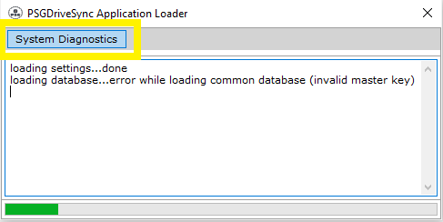
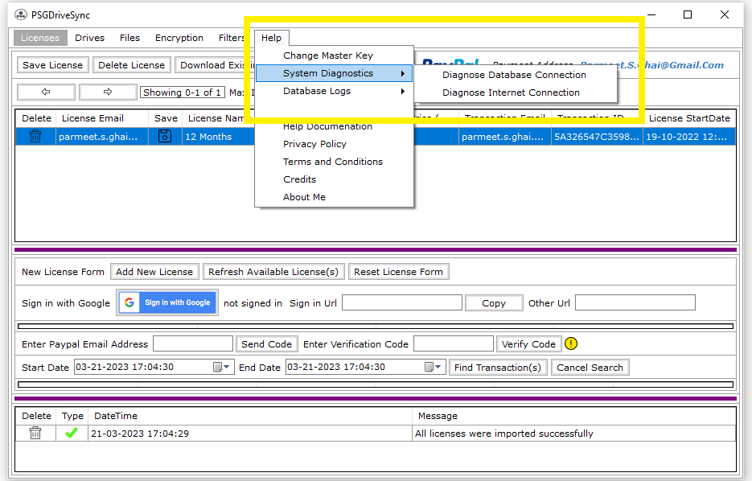

|
PSGDriveSync application is dependent on two main features without which the application will not work. Those features are namely Database and Internet Connection. Database is needed to
store license information, drive information, file information, master key information and among many other things while internet connection is needed to download, manage and verify application
license and to connect to google drive servers through which files and folders on end user's google drive are accessed.
This is the reason why the option to diagnose these two important features are given out in the application at:
- The Loading Window
This is the window that you first see when you run the PSGDriveSync application. The tab for "System Diagnostics" is given out on the top of the window as soon in the screenshot. You can
click on it and that will give you further two diagnostics options
- Diagnose Database Connection
- Diagnose Internet Connection
- The Application Window
This is the main application window that shows up after the loading window which contains all the application functionality. The tab for "System Diagnostics" is given out under the
"Help" tab. You need to click on it to further access the following diagnostics options
- Diagnose Database Connection
- Diagnose Internet Connection
|